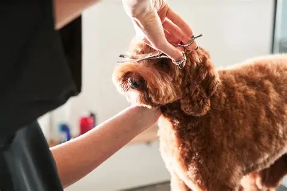
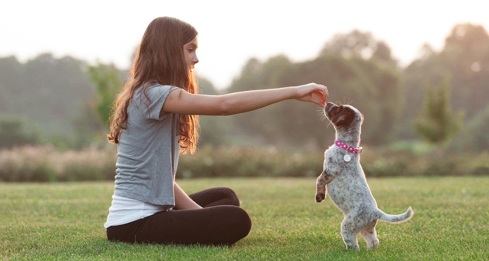

Grooming
Keep your furry friend looking and feeling their best with our professional pet grooming services. From gentle baths and stylish haircuts to nail trimming, ear cleaning, and coat brushing, our experienced groomers make every visit stress‑free and enjoyable for your pet. We use high‑quality, pet‑safe products to ensure a healthy shine and lasting comfort.

Pet Training
Help your canine companion become their best self with our positive, reward‑based dog training services. Whether you're welcoming a new puppy or guiding an older dog toward better manners, our experienced trainers focus on building confidence, communication, and trust. We offer personalized sessions that cover essential obedience skills, socialization, leash walking, and behaviour support—always using gentle, encouragement‑driven methods. From playful pups to seasoned seniors, we’re here to help every dog learn, grow, and thrive.

Pet boarding and Day care
Help your canine companion become their best self with our positive, reward‑based dog training services. Whether you're welcoming a new puppy or guiding an older dog toward better manners, our experienced trainers focus on building confidence, communication, and trust. We offer personalized sessions that cover essential obedience skills, socialization, leash walking, and behaviour support—always using gentle, encouragement‑driven methods. From playful pups to seasoned seniors, we’re here to help every dog learn, grow, and thrive.
.webp)